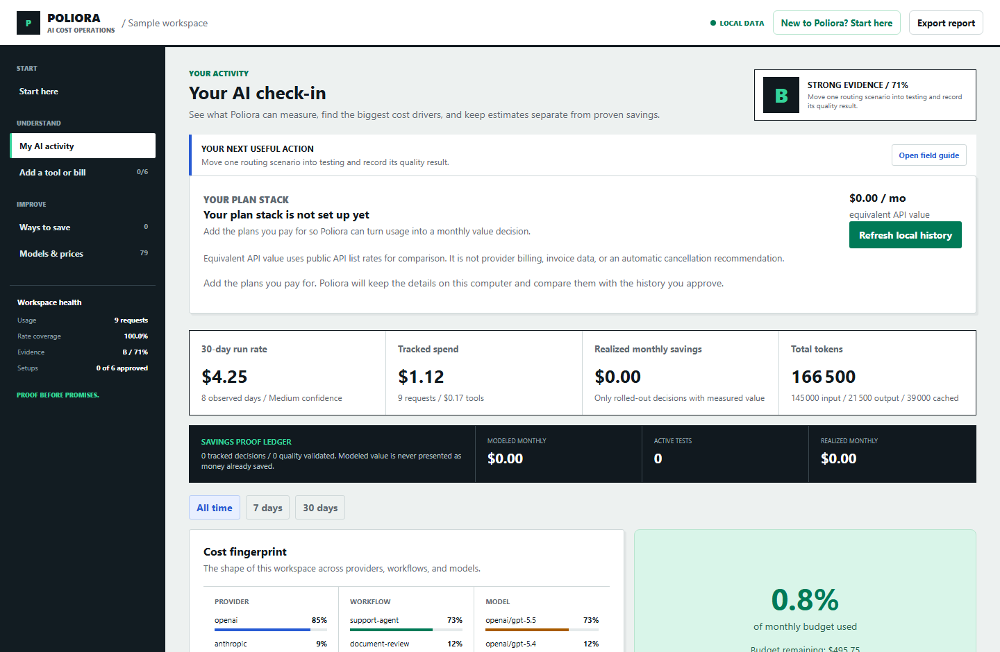

Open Poliora on your laptop.
Choose Windows or the right Mac download below. The app includes its runtime, so you do not need to install Python.
Know where your AI usage goes.
Bring your AI usage into one local workspace. See what your tools recorded, understand your plan, and find changes worth testing. No spreadsheets. No account to create.
Windows & macOS / No Python required / No provider key to get started

Sample workspace, not a customer result. Your dashboard starts with the sources you approve. Usage value, subscription fees and verified savings are different numbers.
Getting started
You can do the entire setup inside the desktop app. The command line is optional.
Choose Windows or the right Mac download below. The app includes its runtime, so you do not need to install Python.
Review supported Codex or Claude Code history, or preview an authorized usage CSV. Nothing is imported until you approve it.
Check usage, available quota information and model rates. Compare options without confusing an estimate with money already saved.
Requires Python 3.11 or newer. The desktop download does not.
pip install poliora && poliora detectDetection previews available local history; poliora detect --import saves the supported metadata to your local workspace.
Compatibility
A tool being installed is not the same as access to its usage history or billing.
| Tool or source | Available now | Important boundary |
|---|---|---|
| Codex | Supported local model, token, plan and quota metadata | Only fields written to supported local history; not your full ChatGPT account |
| Claude Code | Supported local token and model usage | Plan or quota information may be missing; subscription fees are not token bills |
| Antigravity | Optional invocation-activity helper, set up from the app | Activity is not complete token usage, quota or billing history |
| Cursor | Launcher availability check; authorized usage CSV import | No automatic reading of Cursor chats or personal billing history |
| Other AI tools | Compatible usage CSVs and supported API wrappers | A model in the catalog does not mean its app has an automatic connector |
Missing your tool? Request an integration. We would rather show a limitation than invent your data.
Make better decisions
Review the plans you pay for, your recorded activity and any available quota evidence. Look for overlap or a plan that no longer fits.
Switching models does not reduce a fixed subscription fee. Poliora cannot increase or bypass a provider's limits.
See which models carry the recorded cost, compare approved rates, and model a cheaper route for tasks that can tolerate a change.
Poliora analyzes and models changes. It does not silently reroute requests or change your AI tool's settings.
Savings calculator
A best-case planning scenario for pay-per-token usage, not a forecast or a subscription discount.
Assumes the moved usage costs 95% less. Real rates, task suitability and output quality must be checked. No Poliora fee is included.
Illustrative monthly cost
$37.70Compared with $260.00
Desktop downloads
Free public beta. No Poliora account, payment card or Python installation required.
Standalone installer. Adds Poliora to your Start menu and desktop.
Download for WindowsIncludes the app runtime. Your AI tools and their subscriptions stay separate.
The beta installer is not code-signed. Windows may show an unknown-publisher warning. Verify the release and SHA-256 checksum before deciding whether to proceed. Do not disable your security protection.
Standalone app. Unzip the download and move Poliora to Applications.
Not sure which one? Apple menu > About This Mac: check Chip or Processor.
The beta app is not notarized. macOS may prevent the first launch. Review the release and checksums and your organization's security policy before opening it. Never disable Gatekeeper to install Poliora.
Help center
Plain answers, including the things Poliora cannot do.
No Poliora account is needed. The Windows and macOS apps include their runtime, so Python is not required. Reviewing supported local history does not require a provider API key. Optional provider-backed features may need credentials you configure locally.
Start here gives you three choices: review supported local history, import an authorized usage CSV, or explore fictional sample data. Review the available metadata before approving an import. You can return to Add a tool or bill to review sources again.
The supported history scanner extracts usage fields such as timestamps, models and token totals; it does not import your prompts, replies or source code. Local cost analysis does not require your AI credentials. Avoid entering sensitive content into labels, feedback or reports you plan to share.
A fixed monthly plan is not a pay-per-token invoice. Poliora keeps subscription activity out of API-billed spend. Equivalent API value estimates what recorded usage would cost at the available catalog rates; it is not what you owe, what you saved or necessarily a complete valuation.
No tool can promise that from local usage history alone. Poliora shows available recorded quota information and helps you review your plan stack. It cannot raise, reset or bypass a provider's limits. Missing or old quota information is not a live guarantee.
No. Codex and Claude Code have supported local history sources. Antigravity's optional helper records invocation activity, not complete billing. Cursor can be checked for launcher availability and used with compatible authorized exports. Other tools need a supported source or CSV. See the compatibility table above.
The calculator preserves a best-case API-routing scenario: the portion you move is assumed to cost 95% less. It is not a promised result. Savings depend on actual rates, task suitability and output quality. Switching models alone will not reduce a flat subscription fee. Only measured results after rollout count as realized savings.
The current public beta is free. There is no payment step or automatic billing in Poliora. Your existing AI subscriptions and provider charges remain your responsibility. If paid features are introduced later, pricing and terms will be presented separately.
Your local workspace is not sent to Poliora and the app has no automatic product-telemetry upload. This public website may use Cloudflare Web Analytics for aggregate visits and performance, separately from the desktop app. Voluntary feedback goes only through the email or GitHub action you choose. Read the privacy notice.
Use Feedback & support to prepare an email to support@poliora.com. You can review and edit it before sending, or copy it into your usual email app. Public GitHub issues are another option; those require a GitHub account. Never post API keys, private chats or sensitive reports.
Something confusing, missing or not working? Tell us what you expected.